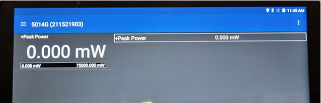
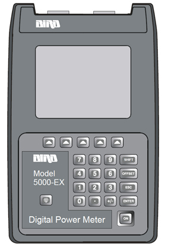

- 00000018WIA30D12130GYZ
- id_152710582.19
- Jul 21, 2025 6:27:01 AM
RF Amplifier and UPM Calibration
Prerequisites
| Required persons | Preliminary requirements | Procedure | Finalization |
|---|---|---|---|
| 1 | - | 45 minutes (plus 30 minutes for Agilent wattmeter power up) | 5 minutes |
| Item | Quantity | Effectivity | Part number | Manufacturer |
|---|---|---|---|---|
| 12 inch Crescent Wrench | 1 | - | - | - |
| Medium Phillips Screwdriver | 1 | - | - | - |
| Small Flat Head Screwdriver | 1 | - | - | - |
| RF power measurement kit (use one of the following kits): | 1 | - |
EITHER 5307511-2 or 5307511-3 (Bird wattmeter) BOTH 5491202 (Agilent wattmeter) and 5491202-2 (dummy load) | - |
| Digital Multimeter | 1 | - |
46-194427 P284 | - |
| ||||||||||||||||||||
| Condition | Reference | Effectivity |
|---|---|---|
|
Before beginning this procedure, confirm that the exciter has been on for at least 20 minutes. | - | - |
|
When using the Agilent wattmeter, plug in the wattmeter and turn it on. The wattmeter must be powered for at least 30 minutes for stable and accurate readings. | - | - |
About this task
Overview
This procedure provides instruction to set up and calibrate the maximum power for the RF Amplifier. The procedure also proceeds through the calibration and functional check of the Universal Power Monitor (UPM) for each channel.
Use the UPM Tool to process each channel through each procedure. For example, when you select head mode, the tool executes the RF amplifier calibration and, if the amplifier passes, proceeds to the UPM calibration and then to the functional check. The process is order-dependent.
Process the body channel first and then the head channel.
RF amplifier and UPM calibration are performed for forward power on a channel. UPM functional check is performed after the channel is calibrated.
The table below describes the calibration steps.
Disabling T/R, DD, and RF Input for Body Mode
Procedure
- On the front of the Driver Module, disable the TR and DD fault detection. Set SW2 to TR DISABLE (down) and SW3 to DD DISABLE (down).
Figure 1. Driver Module (Front View) Switches  Note Leave HV switch set to ENABLE.
Note Leave HV switch set to ENABLE. - Set the RF Enable switch on the Exciter to DISABLE (down).
Figure 2. RF ENB Switch in DISABLE (down) position 
Using Bird Wattmeter and Power Adjustment Kit for RF Body Calibration
Setting up RF Coupler for Body Calibration
Procedure
Wattmeter and Dummy Load Setup for Body Channel (XRFD Amplifier)
Procedure
Setting up the Bird TT800V wattmeter
Procedure
- Plug the M5014G sensor into the USB port located on the right side of the wattmeter.
Figure 7. Bird TT800V wattmeter connected to the M5014G sensor 
Result
The application should automatically open after plugging in the sensor and show a list of available sensors. - Select the M5014G sensor.
Figure 8. Selecting M5014G 
- Select 43 Peak.
Figure 10. Selecting 43 Peak 
- Click the menu bar on the top left corner of the screen and select Configuration.
Figure 11. Selecting Configuration 
- Locate the Element Offset Factors card in the kit and find the offset for the procedure being run.This output is used to make sure of an accurate measurement.
Figure 14. Example Element Offset Factors card 
- Select Forward Scale and enter 50000 for body channel or 5000 for head channel to set the range.
Figure 16. Selecting Forward Scale 
- Click the menu bar on the top left corner of the screen and select Readings.
Figure 17. Selecting Readings 
Results

Setting up Bird 5000-EX Wattmeter to Measure Forward Body Maximum Power
About this task

Procedure
- Verify that the output reads 43, and
then press the ENTER button.
Figure 20. Wattmeter Display Set to Read 
Setting up Bird 5000-XT Wattmeter to Measure Forward Body Maximum Power
About this task

Procedure
- Verify that the output reads 43, and then
press OK.
Figure 24. Wattmeter Set to Read 
- Press ◄ to return to measurement mode.
Figure 26. Wattmeter Set to Display Peak Power 
Using Agilent Wattmeter and Power Adjustment Kit for RF Body Calibration
About this task
The Agilent wattmeter must be powered on for at least 30 minutes for stable and accurate readings. Plug in the wattmeter and turn it on at the beginning of this procedure.
Agilent Wattmeter Setup
Procedure
- Set up the wattmeter for calibration as shown in the following
illustration.
CAUTION Notice - Connect the Agilent sensor probe cable to the sensor.
- Connect the sensor to the power reference (PWR REF) port on the wattmeter.
- Connect the other end of the sensor probe cable to the Channel A port on the wattmeter.
Figure 27. Agilent Wattmeter Calibration Setup 
1 Front of wattmeter 2 Power reference (PWR REF) port 3 Agilent RF power sensor 4 Zero/Cal button 5 Channel A port 6 Agilent sensor probe cable
Wattmeter and Dummy Load Setup for Body Mode (XRFD Amplifier)
Procedure
Setting up Agilent Wattmeter to Measure Forward Body Maximum Power
Procedure
Adjusting RF Amplifier Output Power for Body Mode
Procedure
- When a popup titled RF Amp Calibration appears as shown RF Amp Calibration Popup, do not select the Success or Failure button at this time. First,
go to the Scan Desktop as shown in Patient Icon.
Figure 29. RF Amp Calibration Popup 
- Click the Patient icon to go to the Scan
workplace.
Figure 30. Patient Icon 
- In the Prescan Looping window, set Transmit Gain (TG) to 180.
Figure 31. Prescan Looping Window 
Calibrating UPM Forward Power for Body Channel
Procedure
UPM Functional Check for Body Mode
About this task
After completing the UPM calibration, continue with the UPM functional check.
Procedure
Disabling T/R, DD, and RF Input for Head Mode
Procedure
Using Bird Wattmeter and Power Adjustment Kit for RF Head Calibration
Setting up RF Coupler for Head Calibration
Procedure
Wattmeter and Dummy Load Setup for Head Mode
Procedure
- Connect the input of the RF coupler to J3 on the front panel of the RF Amplifier.
Figure 35. Connection of RF Coupler to Head Output 
Setting up Bird 5000-EX Wattmeter to Measure Forward Head Maximum Power
About this task
This procedure is for the Bird 5000-EX. If you have a Bird 5000-XT, see Setting up Bird 5000-XT Wattmeter to Measure Forward Head Maximum Power.
Procedure
- Verify that the wattmeter display reads 43. If not, type 43 and then press Enter.
Figure 37. Wattmeter Display Set to Read Sensor Type
Setting up Bird 5000-XT Wattmeter to Measure Forward Head Maximum Power
About this task
This procedure is for the Bird 5000-XT. If you have a Bird 5000-EX wattmeter, see Setting up Bird 5000-EX Wattmeter to Measure Forward Head Maximum Power.
Procedure
- Verify that the wattmeter display reads 43. If not, type 43 and then press OK.
Figure 40. Wattmeter Display Set to Read - Press ◄ to return to measurement mode.
Figure 42. Wattmeter Set to Display Peak Power and Watts
Using Agilent Wattmeter and Power Adjustment Kit for RF Head Calibration
About this task
Confirm that the Agilent wattmeter is still powered on. If the wattmeter has been turned off, it must be powered for at least 30 minutes for stable and accurate readings. The wattmeter must also be zero calibrated Agilent Wattmeter Setup.
Procedure
- Connect the remaining Agilent power components as shown below.
Figure 43. Agilent Wattmeter Setup for RF Power Output for Head 
1 RF Amplifier (front) 2 RF output port 3 Wattmeter 4 Agilent sensor probe cable 5 RF sensor connected to the Incident port on the RF coupler 6 RF cable to dummy load 7 RF coupler 8 Agilent 50 ohm terminator connected to the Reflected port on the RF coupler 9 RF adapter 10 Dummy load with internal fans
Adjusting RF Amplifier Output Power for Head Mode
Procedure
UPM Calibration for Head Mode
Procedure
UPM Functional Check for Head Mode
Procedure
- After completing the UPM calibration, continue with the UPM functional check.
- On the UPM Tool, make the following selections:
For this setting: Select: Nuclei 1H Task UPM Func Chk RF Chain Head NotePower Type is grayed out. This is normal and is not used.
- Select Start.
- If the functional check passes, select Quit.
- On the UPM Tool, make the following selections:
- After the RF Amplifier and UPM are calibrated for head mode, proceed to Finalization.